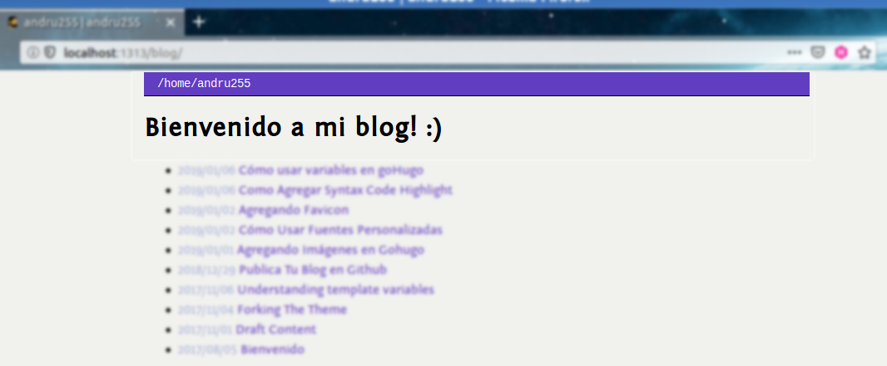

Hola, en este post mostraré una de las piezas fundamentales de gohugo, el qué son y para que son tan útiles en nuestro blog, y se llaman variables1.
Qué son las variables
Son aquellas palabras especiales que trae gohugo y contienen valores como la fecha, la info de un post o articulo, etc.
Existen muchos valores que ofrece hugo para que aplique en tu tema o directo en el blog, y puedes visualizarlo aquí
Variables nativas
En el tema que estoy usando, en el archivo themes/hugo-classic/layouts/_default/header.html, visualizamos:
<title>{{ .Title }} | {{ .Site.Title }}</title>
La variable nativa .Title contiene el valor del título de cada articulo, y para
visualizar el valor que contiene lo realizo ejecutando los comandos para visualizar mi web en local
o generando los archivos correspondientes
Variables personalizadas
Si deseas crear una variable, debes definirlo en el archivo config.toml
Cómo creo una variable
Voy a crear la variable myWelcomeMessage donde contenga el valor Bienvenido a mi blog! :),
entonces actualizo el archivo mencionado con esta sintaxis:
[Params]
myWelcomeMessage="Bienvenido a mi blog! :)"
donde visualizamos además en la línea superior el texto [Params]2 con esto indicamos a hugo
que tenemos uno o un grupo de variables que vamos a utilizar en nuestro sitio.
Dónde imprimo la variable
En mi caso deseo visualizarlo en la vista de inicio del blog, entonces edito el archivo del theme que estoy usando themes/hugo-classic/layouts/_default/list.html :
<h2>{{ .Site.Params.myWelcomeMessage }}</h2>
Visualización y envío de cambios
Realizo los comandos para visualizarlo en local o generación y publicación de archivos
Resultado del tutorial
